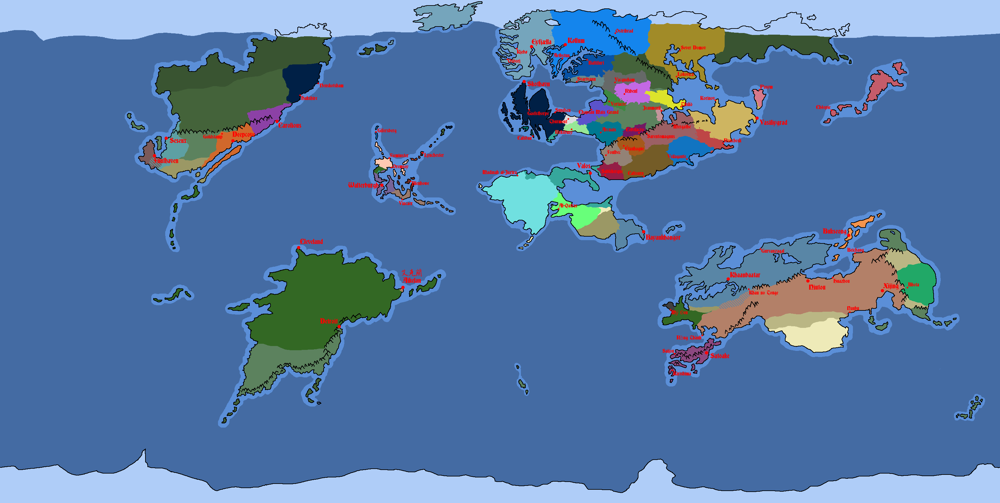
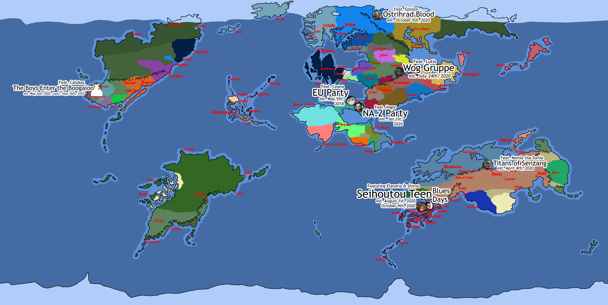
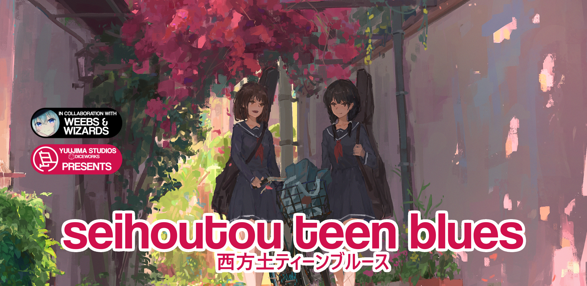
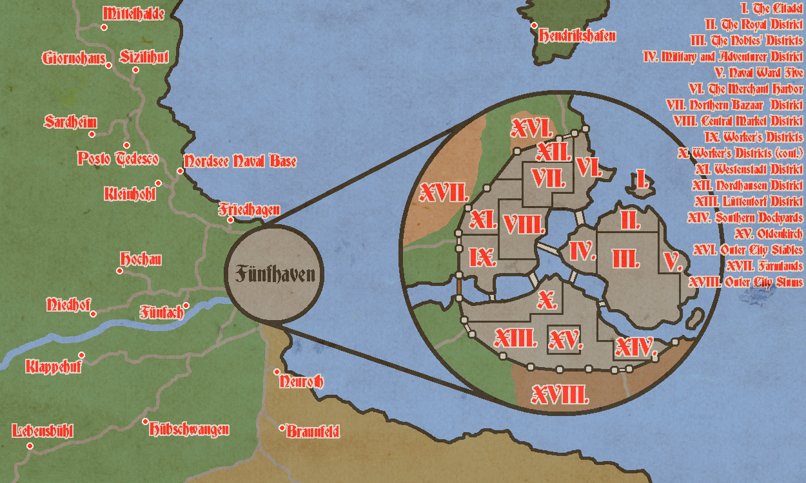

-
Yuujima Studios
About Us
-
PROJECT Razorbill
Just Another Mailman
-
The KCWOWS WM World
A World Full of Adventures
-
The KCWOWS Visual Novel
In Collaboration with Procrastination Novels Ltd.
-
Yuujima Studios
About Us
「夕島スタジオ」
Welcome to the home of Yuujima Studios. Or, the soon-coming home of Yuujima Studios.
We're a ragtag group of idiots making games, a world, and more.
You can catch us at our discord or you can email Daniel at daniel@yuujimastudios.com.
Most of us are focusing on our studies or actual jobs, so chances are you won't see much updates here.
Our current projects are-
> Project Razorbill [DELTA]
> NavCom: Naval Combat
> "DONGFANG PROJECT" -
PROJECT Razorbill
Just Another Mailman
A game following a variety of shipping and logistics companies as they try to stake their claim in an unforgiving and war-torn world.
Currently in the concept phase, with a very basic demo running. Though, the vision of the game is likely to change.
DM Daniel on discord or shoot him an email if you're actually interested. -
The KCWOWS WM World
A World Full of Adventures
The successor to the old "BallengerEarth"/"TuscaroraEarth" projects, the WM World is aimed to act as a D&D world for the KCWOWS Discord Server, constantly changing and evolving.
Currently has 7 parties running throughout it, with two more possibly on the way.
The WM World focuses, at the moment, on two main periods: the Age of Winds, with the majority of parties working around the year 1008 KY, and the Ring Era, circa 1678 KY.

The map of the world in 1007 KY, est. 9/11/2020 (click to see full image)

The map of the varying parties that have been around this world, est. 12/2/2020

Original image by Asteroid Ill (Twitter / Pixiv)

Original image by Xilmo (Twitter / Pixiv)

Original image by Sakeharasu (Site / Twitter / Pixiv)

A map of Fünfhaven during 'the Boys Enter the Boogaloo' campaign, circa 1008 KY. -
The KCWOWS Visual Novel
In Collaboration with Procrastination Novels Ltd.
A small visual novel based on the shenanigans of a certain Discord server. The successor to the /r/KanColle Lounge Visual Novel.
The KCWOWS Visual Novel focuses on the heavy cruiser Ibuki as she adjusts to her new life in the Wagyu Naval Base. Will she find solace in the many hearts and souls of the Naval Base, or will she find her stay lonesome and uneventful?
Find out in this story of a chaotic and crazy base!
{kind=link}
{kind=link}
{kind=link}